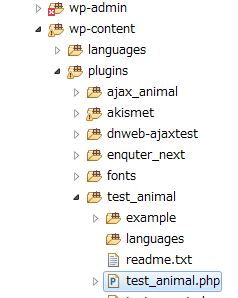

global $wpdb;
$data = $wpdb->get_results(
"
SELECT *
FROM enq_test_animal
WHERE id = 2
"
);
// stdClassオブジェクトから配列に変換する
$data2=array();
if(!empty($data)){
foreach($data as $stdClassEnt){
$data2[] = (array) $stdClassEnt;
}
}
get_results以外のSELECT
| SELECT関数 | 説明 |
|---|---|
| $wpdb->get_var( "SQL文" ); | 値を一つ取得する |
| $wpdb->get_row( "SQL文" ); | 行を一つ取得する |
| $wpdb->get_col( "SQL文" ); | 列を一つ取得する |
外部結合
JOINもSQL文の個所に直接記述する。
// 管理者メニューへ項目を追加する
add_action('admin_menu', function(){
add_menu_page('動物プラグイン', 'アンケーター管理','publish_posts','test_animal/test_animal.php','showContents');
});
function showContents(){
wp_enqueue_style( 'neko', '/wp-content/plugins/test_animal/css/neko.css' ); // CSSのインクルード
wp_enqueue_script( 'neko', '/wp-content/plugins/test_animal/js/neko.js' ); // JSのインクルード
}
wp_enqueue_style関数およびwp_enqueue_script関数について
第1引数
jQuery(function(){
console.log('HelloWorld=');
console.log(jQuery.fn.jquery);// jQueryのバージョンを出力
});
| 関数 | 説明 | 例 |
|---|---|---|
| home_url() | ホームURL | http://localhost/animals |
| site_url() | サイトパスURL | http://localhost/animals/wordpress |
| admin_url() | 管理画面パスURL | http://localhost/animals/wp-admin |
| content_url() | コンテンツパスURL | http://localhost/animals/wp-content |
| includes_url() | インクルードパスURL | http://localhost/animals/wp-includes |
| plugins_url() | プラグインパスURL | http://localhost/animals/wp-content/plugins |
| wp_upload_dir() | アップロードディレクトリURL (配列) | http://localhost/animals/wp-content/uploads |
$wpUser = wp_get_current_user();
var_dump($wpUser);
$wpUser = wp_get_current_user();
var_dump($wpUser->data->user_login);
プラグインファイル構成
ajax_animal.jsajax_animal.php
<?php
/*
Plugin Name: Ajaxテスト・アニマル・プラグイン
Plugin URI: http://amaraimusi.sakura.ne.jp/note_prg/wordpress/
Description: WordPressプラグインのAjaxテストです。
Version: 1.0
Author: kenji uehara
Author URI: http://amaraimusi.sakura.ne.jp/
License: MIT
*/
class AjaxAnimal {
public function __construct(){
// Ajaxで呼び出すメソッドを設定する
$ajax_actions = array(
"ajax_animal_test1" => array("action" => "ajax_animal_test1_action", "function" => "test1"),
//"ajax_animal_test2" => array("action" => "ajax_animal_test2_action", "function" => "test2"),
);
foreach ($ajax_actions as $custom_key => $custom_action) {
add_action("wp_ajax_nopriv_" . $custom_action['action'], array($this, $custom_action["function"]));
add_action("wp_ajax_" . $custom_action['action'], array($this, $custom_action["function"]));
}
// 管理者メニューへ項目を追加する
add_action('admin_menu', function(){
add_menu_page('Ajaxテスト・アニマル', 'Ajaxテスト・アニマル','publish_posts','ajax_animal',function(){
$plugin_path = plugins_url() . '/ajax_animal/';
echo "<script src='{$plugin_path}ajax_animal.js'></script>";
echo '<p>Ajaxテスト・アニマル</p>';
$wp_ajax_url = admin_url('admin-ajax.php');
echo "<input id='admin-ajax-url' type='hidden' value='{$wp_ajax_url}' />";
$nonce = $nonce = wp_create_nonce("unique_key");
echo "<input id='nonce' type='hidden' value='{$nonce}' />";
echo "<input type='button' value='Ajaxテスト' onclick='ajax_test1()' />";
echo "<div id='res' style='color:green'></div>";
echo "<div id='err' style='color:red'></div>";
});
});
}
/**
* Ajaxのサーバー側
*/
public function test1(){
// トークンによるアクセスの正当性を確認
$nonce = $_POST['nonce'];
if (!wp_verify_nonce($nonce, 'unique_key')){
die('nonce error');
}
// データを受け取る
$json_param=$_POST['key1'];
$json_param = stripslashes($json_param);
$data = json_decode($json_param,true);//JSON文字を配列に戻す
// 任意の処理
$data[1]['name1'] = 'Wild Pig';
$res = $data;
// JSONレスポンスを出力
header("Content-Type: application/json; charset=utf-8");
echo json_encode($res);
exit;
}
}
$ajaxAnimal = new AjaxAnimal();
ajax_animal.js
/**
* Ajaxテスト・アニマル
*/
function ajax_test1(){
var url = jQuery('#admin-ajax-url').val();
// フォームデータを生成
var fd = new FormData();
// フォームデータに送信データをJSON変換してからセットする。
var data = [{'id':99,'name1':'タヌキ'},{'id':100,'name1':'イノシシ'}];
var json = JSON.stringify(data);
fd.append( "key1", json );
// WordPressのAjaxで必要なパラメータをセットする
var action = 'ajax_animal_test1_action';
var nonce = jQuery('#nonce').val();
fd.append('action',action);
fd.append('nonce',nonce);
// AJAX通信
jQuery.ajax({
type: "post",
url: url,
data: fd,
cache: false,
dataType: "text",
processData: false,
contentType : false,
})
.done(function(str_json, type) {
var ent;
try{
ent =jQuery.parseJSON(str_json);//パース
jQuery("#res").html('Ajax通信成功!<br>');
jQuery("#res").html(str_json);
}catch(e){
alert('エラー');
jQuery("#err").html(str_json);
}
})
.fail(function(jqXHR, statusText, errorThrown) {
jQuery('#err').html(jqXHR.responseText);
alert(statusText);
});
}
デバッグの方法
PHP側で致命的なエラーが発生すると、admin-ajax.phpで500番エラーになる。test_animal.php プラグイン

<?php
/*
Plugin Name: テスト・アニマル・プラグイン
Plugin URI: http://amaraimusi.sakura.ne.jp/note_prg/wordpress/
Description: プラグイン開発のHello Worldです。
Version: 1.0
Author: kenji uehara
Author URI: http://amaraimusi.sakura.ne.jp/
License: MIT
*/
class TestAnimal {
public function __construct(){
// ショートコード
add_shortcode('bark-dog',array($this, 'barkDog'));
}
public function barkDog($attr){
$dog_name = 'UﾟｪﾟU';
if(!empty($attr['dog_name'])){
$dog_name = $attr['dog_name'];
}
return "<span style='color:#e84646'>{$dog_name} ワンワン!!</span><br>";
}
}
$testAnimal = new TestAnimal();
ショートコードの使い方
投稿の編集を開き、文章中に下記のショートコードを入力して更新する。 [bark-dog dog_name="ポチ" ] echo do_shortcode('[bark-dog dog_name="ポチ" ]'); <?php echo get_the_ID(); ?>WordPressプラグイン開発の例外について
メインループ中でない場合、例外をそのまま投げても画面にエラー内容が表示されない。
// メインループ中の処理にあらず
try {
} catch (Exception $e) {
$err_msg = '$table is empty!';
var_dump('Erorr:'.$err_msg);
throw new Exception($err_msg);// ← 画面にエラーメッセージは表示されない
}
例
<div>
<script type="text/javascript">
alert('JavaScriptを投稿します');
</script>
</div>